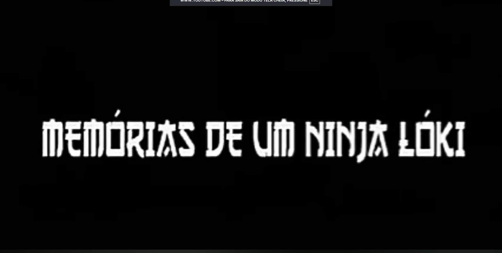
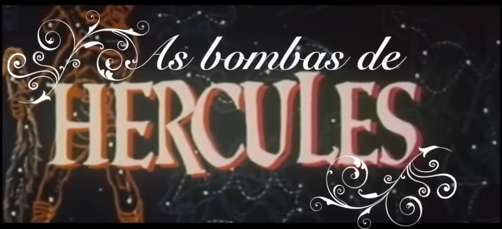
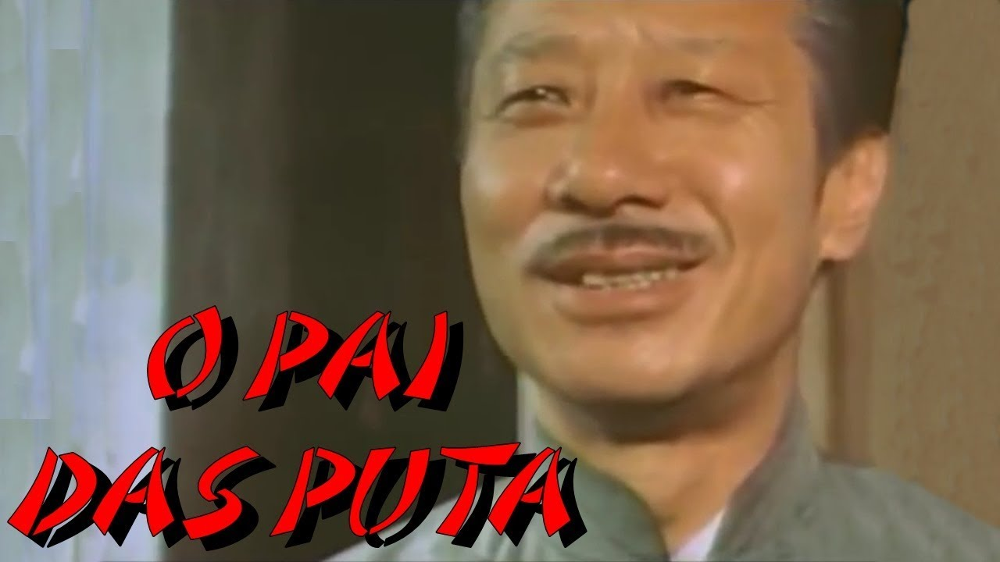

Aprensentando: Tela Class! 🍿
Uma seleção exclusiva com as maiores obras-primas da redublagem satírica nacional.
Exibido originalmente na MTV Brasil, o Tela Class se tornou uma verdadeira lenda da televisão. O grupo Hermes e Renato revolucionou o humor ao resgatar filmes obscuros e transformá-los em comédias geniais. Com roteiros absurdos, sotaques exagerados e um humor completamente sem filtros, eles criaram um formato único que até hoje é lembrado com carinho pelos telespectadores que sempre usam frases marcantes com "Na Porrada Eu não Tenho Limites" sempre que possível.
🎬 Filmes em Cartaz
1. Memórias de um Ninja Lóki

Gênero: Comédia / Sátira / Artes Marciais
Sinopse: Acompanha as desventuras e os relatos de vida absurdos de um ninja chamado Lóki. Entre treinamentos místicos tramas de vingança , o protagonista narra suas façanhas exageradas com muita esculhambação e sátiras.
Elenco de Dublagem: Fausto Fanti, Marco Antônio Alves, Felipe Torres, Bruno Sutter e Adriano Pereira.
Nota: ⭐⭐⭐⭐⭐ (5/5)
Assistir ao Trailer no YouTube
2. Uma Odisseia Brazuka no Espaço

Gênero: Comédia / Sátira / Ficção Científica
Sinopse: Uma história hilariante de como o programa espacial brasileiro se desenvolve até lançar um foguete 100% Brazuka no espaço. Após o lançamento, a tripulação passa por diversas situações absurdas e cômicas em órbita.
Elenco de Dublagem: Fausto Fanti, Marco Antônio Alves, Felipe Torres, Bruno Sutter e Adriano Pereira.
Nota: ⭐⭐⭐⭐ (4/5)
Assistir ao Trailer no YouTube
3. Tretas de Hong Kong

Gênero: Comédia / Sátira / Ação Policial
Sinopse: Acompanha a história de 4 perigosos e inteligentes assaltantes de Hong Kong (Chefe, Madruga, Valdir e Anão Bucha) que roubam uma fortuna, mas cometem o erro de escolher o alvo errado. Com doses pesadas de comédia, porrada e traição, o bando precisa usar seu instinto de sobrevivência para fugir da polícia e dos caloteiros querendo levar sem pagar o dinheiro: a poderosa máfia chinesa, as Tríades.
Elenco de Dublagem: Fausto Fanti, Marco Antônio Alves, Felipe Torres, Bruno Sutter e Adriano Pereira.
Nota: ⭐⭐⭐⭐⭐ (5/5)
Assistir ao Trailer no YouTube
4. Bombas de Hércules

Gênero: Comédia / Sátira / Mitologia Maromba
Sinopse: Hércules enfrenta seus clássicos desafios, mas o foco da história muda para a sua rotina de maromba. Em vez de heroísmo mítico, ele é obcecado por anabolizantes (as "bombas") para ficar cada vez mais musculoso. O herói lida com a vaidade extrema, os efeitos colaterais e as reações cômicas dos deuses em situações non-sense com a clássica dublagem canastrona do grupo.
Elenco de Dublagem: Fausto Fanti, Marco Antônio Alves, Felipe Torres, Bruno Sutter e Adriano Pereira.
Nota: ⭐⭐⭐⭐⭐ (5/5)
Assistir ao Trailer no YouTube
5. O Pai das Putas

Gênero: Comédia / Sátira / Redublagem Non-sense
Sinopse: A história acompanha um jovem problemático que é preso após ter relações com sua prima sem pagar. O crime ocorreu no bar do seu tio, que na verdade é uma fachada para um esquema que envolve o comércio de drogas e a prostituição das próprias filhas do tio.
Elenco de Dublagem: Fausto Fanti, Marco Antônio Alves, Felipe Torres, Bruno Sutter e Adriano Pereira.
Nota: ⭐⭐⭐⭐⭐ (5/5)
Assistir ao Trailer no YouTube
🎭 Atores e Dubladores do Tela Class
| Foto |
Nome do Ator / Criador |
Filme Famoso |
Curiosidade |
 |
Fausto Fanti |
Memórias de um Ninja Lóki |
Ator da frase: "Na Porrada Eu não Tenho Limites". |
 |
Felipe Torres |
Memórias de um Ninja Lóki |
Ator da infame frase: Ninja Banana ?? o que você está fazendo na minha casa as 10 da manhã??. |
 |
Marco Antônio Alves |
Bombas de Hércules |
Dublador da famosa frase: "posso olhar chefia"? "pode, mas se arranhar o cavalo vai apanhar" . |
|
Bruno Sutter |
Tretas De Hong Kong |
Ator da frase mais marcante do tela class: O que tem para o jantar hoje seu Shitake??? Miojo!, ei...Miojo hoje não. |
|
Adriano Pereira |
O Pai das Putas |
Ator da frase: "Quando acabar eu boto talquinho nela e bato assim tatatatatatatatatatatata". |
🎙️ Entrevista Exclusiva
Conversa com o astro das telas: Felipe Torres (Boça)
Podreira Films: Como foi atuar em um site feito puramente em HTML, sem nenhuma formatação chique?
Felipe Torres: "Puta mundo injusto, meu! O cara faz as esquetes com o maior carinho, e o professor manda tirar o CSS? Fiquei parecendo um site de 1995 de universidade federal, meu! Fiquei muito chateado, puta sacanagem!"
Podreira Films: Pelo menos a semântica está correta, não acha?
Felipe Torres: "Ah, meu, aí sim! Pelo menos não meteram um bando de <div> pra tudo lado, né? Aí eu dou valor!"